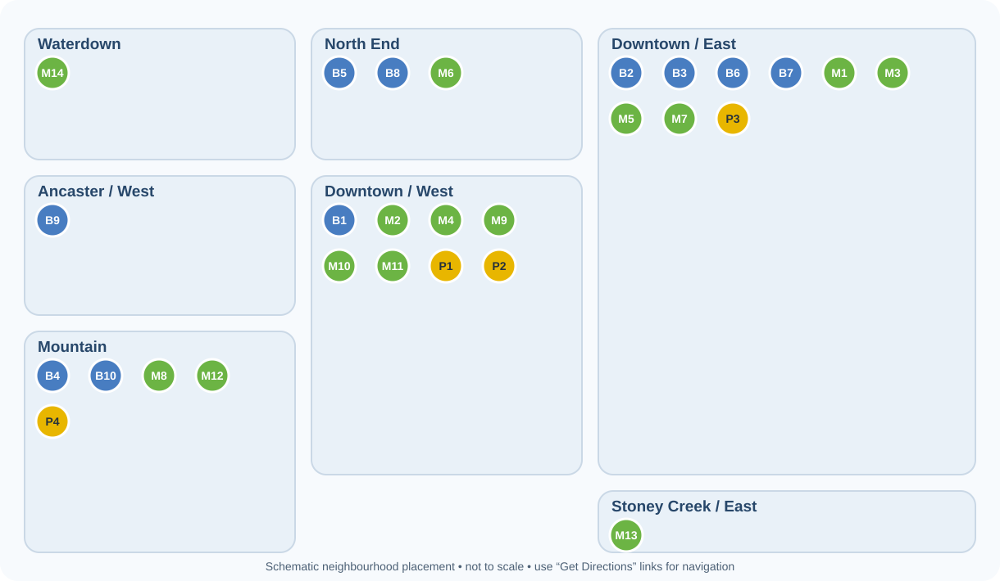

ECONOMICAL FOR ALL
Local Supports - Hamilton, Ontario
A practical guide to food banks and community food supports in Hamilton, Ontario. Details below are summarized from the Hamilton Food Bank Visit Guide (updated research: November 2026). Please call ahead before travelling: locations, hours, and eligibility can change.
← Back to Learn. Nourish. Repeat.HAMILTON FOOD RESOURCESHamilton Food Resources Map
A quick-loading neighbourhood guide to food banks, community meals and outreach, and community pantries and fridges. Numbered markers correspond to the location key below.

● Food Banks● Meals & Outreach● Pantries & Fridges
Food Banks
- B1 Salvation Army
- B2 Good Shepherd Venture Centre
- B3 Mission Services Good Food Centre
- B4 Neighbour to Neighbour
- B5 Welcome Inn
- B6 Hamilton Dream Centre
- B7 King’s Way Outreach
- B8 Eva Rothwell Centre
- B9 Ancaster Community Services
- B10 Parkview Church
Community Meals & Outreach
- M1 De Mazenod Door
- M2 Gore Park Outreach
- M3 Good Shepherd Daily Meals
- M4 The Hub
- M5 541 Eatery & Exchange
- M6 Salvation Army Van — Bayfront Park
- M7 Salvation Army Van — Barton & Birch
- M8 Out of the Cold — Immanuel
- M9 Out of the Cold — St. Joseph’s
- M10 Out of the Cold — Erskine
- M11 Out of the Cold — Central Presbyterian
- M12 Out of the Cold — St. Stephen
- M13 Out of the Cold — Heritage Green
- M14 Out of the Cold — Knox Waterdown
Community Pantries & Fridges
- P1 Locke Street Community Fridge
- P2 Strathcona Community Pantry
- P3 Ottawa Street Community Fridge
- P4 Concession Library Pantry (unconfirmed)
Neighbourhood positions are schematic and not precise street coordinates. Niwasa provides its current pickup address when booking; Hamilton Out of the Cold operates at multiple seasonal sites. Community Events have no fixed address. Check each program before visiting.
HAMILTON FOOD RESOURCES
Food Banks
PREPARE FOR YOUR VISITWhat to Bring
Requirements vary by food bank. These items may help you prepare; check each location before visiting.
🪪Photo identificationAccepted ID for registration
📄Proof of benefits or incomeRecent income or benefit statement
🛍️Grocery bagsReusable bags for food
❄️Freezer bagsFor chilled or frozen items
🚌TransportationBus, cab, Uber, friend or family
🏠Proof of address and rentIf the program requests it
Salvation Army
- Address
- 80 Bay St N, Hamilton, ON
- Phone
- 905-540-1888 ext 101
- Hours / access
- Appointment only; every 6 weeks (per notes)
- Important details
- Bring ID, proof of income, address and rent.
Good Shepherd Venture Centre
- Address
- 155 Cannon St E, Hamilton, ON
- Phone
- 905-972-9485
- Hours / access
- Monday–Friday, 9:00 am–2:45 pm
- Important details
- First registration in person; registered visits by appointment. Food and clothing.
Mission Services Good Food Centre
- Address
- 196 Wentworth St N, Hamilton, ON
- Phone
- 905-528-4212
- Hours / access
- Monday, Wednesday and Friday, 9:00 am–12:30 pm (newer listing)
- Important details
- Walk-in (per notes). Bring ID and address. Call first.
Neighbour to Neighbour
- Address
- 28 Athens St, Hamilton, ON
- Phone
- 905-574-1334 ext 300
- Hours / access
- Monday–Wednesday, 9:30 am–3:15 pm; Thursday, 12:30 pm–7:15 pm
- Important details
- Appointment only. Hamilton Mountain residents only.
Welcome Inn
- Address
- 40 Wood St E, Hamilton, ON
- Phone
- 905-525-5824
- Hours / access
- Monday, Wednesday and Friday, 10:30 am–2:00 pm (Hamilton Food Share)
- Important details
- Walk-in; once every 30 days. Bring ID.
Niwasa Food Bank
- Address
- East Hamilton — pickup address provided when booking (relocated August 2026)
- Phone
- 905-549-4884 (option 1)
- Hours / access
- By appointment; call centre Monday–Friday, 8:00 am–12:00 pm
- Important details
- Call 905-549-4884 option 1 for the current pickup location; do not travel to an older address.
Hamilton Dream Centre
- Address
- 627 Main St E, Hamilton, ON
- Phone
- 905-527-8605
- Hours / access
- Tuesday, Wednesday and Thursday, 10:00 am–12:00 pm and 1:00 pm–4:00 pm (per notes)
- Important details
- Call to confirm appointments.
Official website lists temporary service location: 616 Main St E. Directions use this temporary address; confirm before visiting.
King’s Way Outreach
- Address
- 390 King William St (newer directory), Hamilton, ON
- Phone
- 905-296-9473
- Hours / access
- Monday–Thursday, 10:30 am–12:30 pm and 1:00 pm–2:45 pm (per notes)
- Important details
- Walk-in. Address from regional service directory; verify before visiting.
Eva Rothwell Centre
- Address
- 460 Wentworth St N, Hamilton, ON
- Phone
- 905-526-1558 ext 408
- Hours / access
- Monday–Friday, 10:00 am–2:00 pm
- Important details
- Walk-in. Lower Hamilton postal codes listed: L8H, L8K, L8L, L8M, L8N, L8P, L8R, L8S. Clothing times: call to verify.
Ancaster Community Services
- Address
- 300 Wilson St E, Hamilton, ON
- Phone
- 905-973-1180
- Hours / access
- Monday/Tuesday, 9:00 am–3:00 pm
- Important details
- Appointment only; once monthly. Ancaster residents only: L9G, L9K, L9R (per notes).
Parkview Church
- Address
- 1120 West 5th St, Hamilton, ON
- Phone
- Not provided in guide
- Hours / access
- Monday and Thursday, 10:30 am–1:00 pm (per notes)
- Important details
- Walk-in. Registration costs $2; bring exact change.
Before you visit: Contact the food bank to confirm its current address, operating hours, appointment policy, service area, and required documents. This page summarizes the supplied guide rather than independently verified current listings.
LOCAL COMMUNITY SUPPORTCommunity Meals & Outreach
Free and affordable meals, seasonal services and mobile outreach in Hamilton.
De Mazenod Door (St. Pat’s)
- Address
- 440 King Street East, Hamilton, Ontario
- Times / access
- Breakfast daily 9:45–11 AM; lunch Sat–Thu 11 AM–1 PM; Friday BBQ 1–2:30 PM
- Contact
- 905-522-9828
- About
- Free daily breakfast and lunch; no registration required.
Gore Park Community Outreach
- Address
- 1 Hughson Street South, Hamilton, Ontario
- Times / access
- Saturday 10 AM–2 PM
- Contact
- goreparkoutreach@gmail.com
- About
- Volunteer-led free prepared meals, groceries and essential items; drop-in access.
Good Shepherd Centre — Daily Meals
- Address
- 135 Mary Street, Hamilton, Ontario
- Times / access
- Meal times: confirm with the centre
- Contact
- 905-972-9485
- About
- Provides free meals and community support at the Mary Street centre, separate from the Venture Centre food bank.
Hamilton Out of the Cold
- Address
- Multiple sites / variable locations
- Times / access
- Seasonal, generally November–March; times vary by site
- Contact
- 905-308-8447 · hootc97@gmail.com
- About
- Free winter meals at participating churches and community sites. Consult the current PDF for dates, times and addresses.
The Hub
- Address
- 21 Rebecca Street, Hamilton, Ontario
- Times / access
- Centre hours Mon–Fri 11 AM–5 PM; meal hours unconfirmed
- Contact
- 365-833-7854
- About
- Community support and basic-needs services. Call to confirm whether and when food is available.
541 Eatery & Exchange
- Address
- 541 Barton Street East, Hamilton, Ontario
- Times / access
- Tuesday–Saturday 8 AM–2 PM
- Contact
- 289-389-0541
- About
- Nonprofit café offering affordable meals and a pay-it-forward meal exchange; not all meals are free.
Salvation Army Street Ministry Van
- Address
- Multiple sites / variable locations
- Times / access
- Mon, Tue, Thu, Fri, Sun; Bayfront Park 8–8:45 PM; Barton & Birch 9–9:45 PM (confirm)
- Contact
- 905-527-1444
- About
- Mobile outreach offering food and practical support at two evening stops.
Community Events
- Address
- Multiple sites / variable locations
- Times / access
- Dates, times and locations vary
- Contact
- Check individual event organizers
- About
- Free meals and snacks may be available at community events across Hamilton. No fixed schedule or single location.
LOCAL COMMUNITY SUPPORTCommunity Pantries & Fridges
Low-barrier community food sharing; availability depends on donations.
Locke Street Community Fridge
- Address
- 115 Stanley Avenue, Hamilton, Ontario
- Times / access
- Daily 8 AM–8 PM (published)
- Contact
- lockest.fridge@gmail.com
- About
- Free community fridge supported by neighbours; take what you need, subject to available donations.
Strathcona Community Pantry
- Address
- 460 York Boulevard, Hamilton, Ontario
- Times / access
- 24 hours, seven days a week (published)
- Contact
- strathconapantry@gmail.com
- About
- Free self-service outdoor pantry for shelf-stable food and essential items.
Ottawa Street Community Fridge
- Address
- 204 Ottawa Street North, Hamilton, Ontario
- Times / access
- 24 hours, seven days a week (published)
- Contact
- communityfridgeshamont@gmail.com
- About
- Free outdoor community fridge and pantry; food availability depends on donations.
Concession Branch Library Community Pantry
This location is unconfirmed at this time.
- Address
- 565 Concession Street, Hamilton, Ontario
- Times / access
- Pantry hours unconfirmed; check with library
- Contact
- 905-546-3200
- About
- Handout identifies a pantry at this library, but current pantry operation has not been independently confirmed.